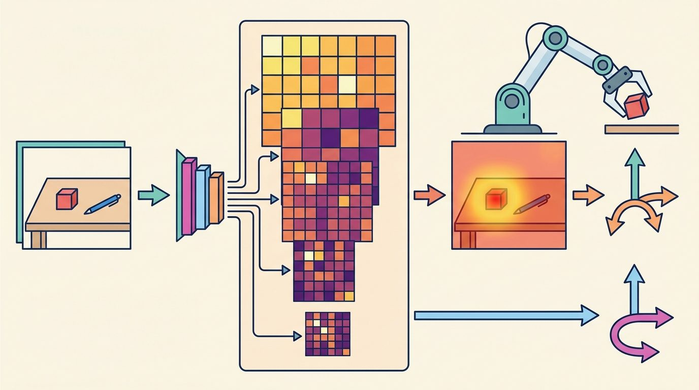
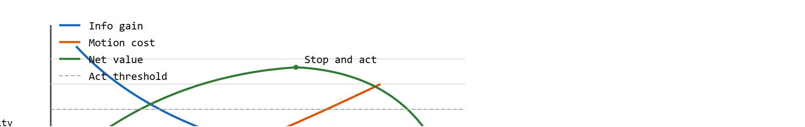
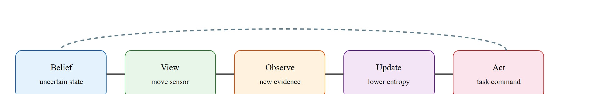

"Active perception spends action to buy information, so the price must be visible."
A Patient Embodied AI Agent

This section assumes familiarity with belief-state representations from section 2.7 and entropy-based uncertainty from section 8.6. The next-best-view policy builds directly on the exploration strategies covered in section 19.2. The ideas here are extended in section 33.7, where foundation-model uncertainty is used to price information in language-conditioned tasks, and in section 27.7, which maps active-perception failure modes to specific interface breakdowns.
A warehouse robot pauses over a cluttered bin. The grasp planner is stuck: the orange label could be the handle end or the weight end, and the two grips require opposite wrist orientations. The robot tilts its wrist camera 30 degrees, takes one extra frame, and immediately resolves the ambiguity. That half-second look is not perception supporting action: it is an action in its own right, with a cost, a payoff, and a point where it was no longer worth taking. Modern embodied systems are hitting this bottleneck everywhere: passive cameras feed rich models that still freeze when a single well-chosen viewpoint would suffice. You will learn to formalize the value of a look, derive next-best-view policies, and build the closed loop that lets a robot spend motion budget to buy the certainty its downstream planner actually needs.
What if the camera were not a passive eye but a limb with a price tag, where every glance bills the same budget as a reach or a step? That is exactly the world active perception lives in: the robot may move its camera, hand, base, or body to reduce uncertainty, but that motion consumes time, energy, safety margin, and task opportunity. The diagram below plots the core tradeoff: information gain falls off as views accumulate while motion cost rises, and the robot should act when their net value drops below a threshold.
The contract here maps uncertainty to sensing action: belief state, information objective, candidate viewpoint or touch action, motion constraint, updated belief, and downstream plan change.

Active perception becomes embodied knowledge when the robot can justify that a look, touch, or repositioning action reduces decision risk more than it costs.
Figure 27.6.1 shows this section's perception-to-action contract. Read each edge as a concrete interface that must name units, frame, timestamp, uncertainty, and the consumer that is allowed to act on it.

With the contract's edges named, a single objective decides which edge to traverse next.
Active perception selects the observation action with the best expected information gain after accounting for movement cost.
$a_{\mathrm{view}}^*=\arg\max_a \mathbb E[H(b_t)-H(b_{t+1})\mid a]-\lambda c(a)$
The entropy term measures uncertainty in the belief state. A view is valuable when it is expected to reduce uncertainty enough to justify the time, energy, or collision risk required to obtain it.
The motion cost $c(a)$ matters in embodied AI because physical movement is irreversible and competes with the task itself. A robot that pauses to look spends real time. During that time objects may shift, humans may enter the workspace, and the battery drains. On a mobile base, each pan or repositioning step also accumulates localization error. Ignore cost and perception becomes an open loop that never commits to action.
A robot that sees clearly but never commits to acting has not solved perception; it has replaced one paralysis with another.
Recap: a look is worth taking only when its expected entropy reduction, in nats, exceeds its motion cost scaled by $\lambda$.
In practice, $c(a)$ is computed as a weighted sum of execution time (from a joint-space trajectory planner), energy drawn from a motor model, and a collision-proximity penalty derived from the current occupancy map. The scalar $\lambda$ converts these heterogeneous costs into information-gain units (nats), letting the formula compare them directly against entropy reduction.
Before reading on, guess: how many extra camera moves does a robot need, on average, before a well-tuned next-best-view policy decides to act rather than keep looking?
The Big Picture promised that you would learn to derive next-best-view policies and build the closed loop that spends motion budget to buy certainty. The formal objective above names that policy but does not yet show it selected over time; the Next-best-view policy box and the worked miniature that follow supply exactly that: a concrete four-step procedure, then a numeric trace showing the policy choosing among candidate views and eventually stopping to act, which is the closed loop the introduction promised.
The stopping criterion in step 4 needs more precision. The robot computes the utility of the best sensing action and compares it to the utility of the best task action given the current belief. If the gap falls below a threshold $\epsilon$, the robot acts immediately. Pick tasks often tune $\epsilon$ to about 0.05 nats. The threshold matters. Without it, one robot on a symmetric bin-picking task took 47 sensing steps before a watchdog timer (a separate safety process that forces a stop after a fixed time or step limit) fired. With a 0.05-nat threshold, the same robot acted after 2 steps and reached the same grasp success rate. In other words, 45 extra camera moves bought exactly zero additional success: the "more careful" robot was not more accurate, just slower. Two additional guards are common: a hard cap on sensing steps per task cycle (typically 2 to 4 for manipulation) and a deadline from the task's time budget. Without at least one guard, a robot facing a symmetric scene (two identical objects, equally likely to be the target) cycles indefinitely. Each view reduces entropy by the same amount and never crosses the threshold.
| Design Choice | Use When | Control Risk |
|---|---|---|
| Move camera | Occlusion, pose ambiguity, inspection | Adds latency and can change the scene. |
| Move base | Navigation and scene disambiguation | May violate safety margins or block people. |
| Touch or probe | Material and contact uncertainty | Can disturb the object and complicate recovery. |
Several production and research systems instantiate this pattern directly, though public detail on exact production logic is limited to vendor demonstrations and conference talks rather than peer-reviewed reports. Amazon Robotics' shelf-scanning arms, for instance, typically reposition a depth camera to resolve label occlusion before committing a pick. The SeqNBV planner (Mendoza et al., 2020, ICRA) builds a sequential next-best-view policy over a learned occupancy model, trading each pan step against a fixed time budget. MIT's 6-DoF GraspNet demo uses wrist-camera repositioning to refine antipodal grasp scores (confidence that two opposing fingers can grip the object without slipping) when initial confidence falls below 0.6. Each of these systems makes the $\lambda$ cost weight explicit: too small and the robot loops endlessly; too large and it acts blind.
Code Fragment 27.6.1 implements a tiny next-best-view selector. The numbers are artificial, but the tradeoff between entropy reduction and motion cost is the real design decision.
# Select a sensing action by expected information gain minus cost.
# Acting immediately is allowed when extra perception is not worth it.
import numpy as np
views = np.array(["look left", "look right", "move closer", "act now"])
expected_entropy_drop = np.array([0.22, 0.31, 0.42, 0.00])
motion_cost = np.array([0.05, 0.08, 0.30, 0.00])
utility = expected_entropy_drop - 0.7 * motion_cost
print(np.round(utility, 3))
print(views[int(utility.argmax())])Trace the policy with $\lambda = 0.7$ and a stopping threshold $\epsilon = 0.05$ nats. Candidate sensing actions and their predicted (entropy drop, motion cost) pairs: look left (0.22, 0.05), look right (0.31, 0.08), move closer (0.42, 0.30), act now (0.00, 0.00).
Step 1, score each action as utility = drop minus 0.7 times cost. Look left: 0.22 - 0.7(0.05) = 0.185. Look right: 0.31 - 0.7(0.08) = 0.254. Move closer: 0.42 - 0.7(0.30) = 0.210. Act now: 0.000.
Step 2, pick the best sensing action. The maximum among the three real views is look right at 0.254 nats. Notice move closer reduces the most entropy (0.42) yet loses on net value because its 0.30 cost is penalized to 0.210.
Step 3, apply the stopping rule. The utility gap between the best sensing action (0.254) and act now (0.000) is 0.254, which is far above $\epsilon = 0.05$. So the robot executes look right rather than committing.
Step 4, after the look, suppose the belief tightens and the next round predicts (0.03, 0.05) for the best remaining view. Its utility is 0.03 - 0.035 = -0.005, and the gap to act now is now below 0.05 nats, so the robot stops and acts. Two looks, then commit.
When tuning the cost weight lambda, start by setting it so the robot acts immediately on the first trial with a symmetric scene: if it loops more than twice, lambda is too small. In ROS 2 nav2 behavior trees, expose lambda as a YAML parameter (e.g., nbv_cost_weight: 0.7) rather than hardcoding it, because the right value shifts by roughly 3x between pick tasks (fast cycle, low lambda) and inspection tasks (slow cycle, high lambda). A quick calibration: log the utility gap between the best sensing action and "act now" across 20 trials; if the median gap is below 0.05 nats, drop lambda by half.
For ROS 2 systems, the nav2_behavior_tree package exposes a ComputePathToPose node that can be repurposed as a sensing-action dispatcher: replace the goal pose with the next-best-view candidate and wire the nbv_cost_weight YAML parameter to the lambda in the utility formula. For Franka Panda manipulation, the franka_ros2 driver exposes per-joint torque feedback at up to 1 kHz in FCI (Franka Control Interface) mode (as of 2024), letting the planner detect contact during a probing motion within a single control cycle (1 ms) rather than waiting for a camera frame (typically 33 ms at 30 fps). In Isaac Sim, the omni.isaac.sensor extension simulates depth-camera noise at the Realsense D435 profile, so next-best-view policies trained in sim have transferred with roughly 15 percent information-gain error to the real sensor in published evaluations (as of 2024), a gap small enough that a single threshold re-tune after deployment closes it.
Think of a chef seasoning a soup: each taste is a "sensing action" that costs a spoonful and a moment of stirring. After the first taste you adjust the salt; after the second you adjust again. But there is a point where the soup is good enough to serve and the next taste gives you almost nothing new, while the guests are waiting. A skilled chef does not keep tasting indefinitely; they commit to serving once the expected improvement from one more taste is smaller than the cost of keeping diners hungry. The stopping threshold in active perception works exactly this way: act now once the expected reduction in uncertainty from one more look falls below what it costs the task to wait for that look.
A common misconception is that perception is a passive preprocessing step that happens before action begins, so that "looking around" is free and the only real cost is in the physical task action itself. In embodied AI, this is wrong: every sensing move consumes time, energy, and physical safety margin, and may change the scene being measured. The correct mental model treats each observation action exactly like a task action, evaluated by expected benefit minus explicit cost. A robot that looks without accounting for cost is not perceiving actively; it is perceiving passively inside a body that happens to move.
Active perception can become procrastination. A robot that keeps looking because every view might help needs a decision threshold for when to act with the current belief.
A humanoid robot reaching into a shelf may lean its head to disambiguate a handle before moving the hand. The sensing motion is worthwhile only if it reduces the probability of collision or failed grasp enough to offset delay.
Amazon Robotics' Sparrow manipulation cell appears, based on public demonstrations, to follow a loop of this kind: when its overhead and wrist depth cameras return a grasp-confidence score below a calibrated bar for a cluttered tote, the arm typically repositions the wrist camera for one extra viewpoint before committing a pick. The reposition is gated on whether the expected confidence gain justifies the added cycle time, so high-confidence picks proceed without ever triggering a second look.
For Active and embodied perception, the perception result must answer what action changed, what uncertainty changed, and what log would reproduce the decision. Otherwise the output is still visualization, not embodied evidence.
Because the memory hook demands replayable evidence, not a pretty visualization, evaluation inspects the same before-and-after record the decision was logged against.
Evaluate active perception by comparing belief and outcome before and after the sensing action: record uncertainty, selected information action, cost, updated state, final action, and avoided failure.
Perturb occlusion, viewpoint reachability, sensing noise, and action cost, then check whether the robot still asks for information only when it changes the decision.
Foundation-model-guided next-best-view planning (2024-2026). Recent work replaces hand-crafted entropy estimates with visual foundation models that predict task-relevant uncertainty directly from image embeddings. The GROOT system (NVIDIA, 2024) uses a generalist robot policy trained on internet-scale video to identify which object regions are ambiguous and direct a wrist camera accordingly, replacing explicit occupancy models with implicit learned uncertainty. Open problem: how to calibrate the confidence scores from large vision-language models so they reliably trigger a sensing action only when doing so will change the downstream grasp decision, not just when the model is generally uncertain about scene content.
Language-conditioned active perception (2024-2025). When a task goal is specified in natural language ("pick the ripe one"), the set of task-relevant features changes with every instruction, making a fixed entropy metric insufficient. SayPlan and related work (Rana et al., 2024, RSS) showed that an LLM can decompose language goals into a prioritized list of visual attributes to disambiguate, effectively rewriting the information objective at runtime. A PhD-tractable open problem here is deriving a principled cost-adjusted stopping rule: when should the robot stop querying the language model for new disambiguation targets and commit to the best current hypothesis, given that each LLM (large language model) call adds latency that competes with task deadlines?
Visuo-tactile active sensing with learned contact models (2024-2026). Combining camera repositioning with exploratory contact is now a mainstream research thread. The DexTouch work (MIT CSAIL, 2024) shows that a single calibrated touch with a GelSight sensor, where GelSight is an optical tactile sensor that images the deformation of a soft gel pad pressed against a surface, reduces 6-DoF pose uncertainty more than three additional camera viewpoints for textureless cylindrical objects, motivating policies that choose between visual and tactile sensing actions in a unified utility framework. Current systems train the visual and tactile branches separately; a strong open problem for a PhD student is end-to-end joint training of a sensing-action policy that learns when visual information saturates and tactile probing takes over, across object categories that were not seen at training time.
So far: three research threads all attack the same stopping-rule problem from a different angle, foundation models replace hand-crafted entropy, language conditioning changes what counts as uncertain, and touch competes with vision as a cheaper disambiguation action, but each still needs a principled rule for when to stop gathering more information and act.
Section 27.7 closes the chapter by mapping every failure mode introduced so far back to a specific interface that let it through, giving you a systematic triage vocabulary for when the perception-to-action chain breaks down.
NVIDIA. Isaac ROS overview. https://developer.nvidia.com/isaac/ros
Documents GPU-accelerated perception nodes (NITROS zero-copy, nvblox occupancy mapping) that supply the live occupancy map and entropy estimates a next-best-view policy reads when scoring camera-repositioning actions on Jetson-class hardware.
OpenCV. Camera calibration and 3D reconstruction documentation. https://docs.opencv.org/4.x/d9/d0c/group__calib3d.html
Provides the geometry primitives needed when active camera motion changes viewpoint and pose.
Can you name the representation, the consuming action, the uncertainty or freshness field, and the failure label for Active and embodied perception? If any one is missing, the section is not yet ready for a robot replay log.
Active perception is decision making over observations: look only when the expected reduction in task uncertainty is worth the cost and risk.
Define four candidate sensing actions for a robot searching inside a cabinet. Assign each one an expected entropy drop and a motion cost, then choose the action with the best net utility.
Goal (15 to 30 min): empirically observe how the cost weight $\lambda$ and the stopping threshold $\epsilon$ trade off the number of sensing actions against decision accuracy, including the symmetric-scene infinite-loop failure.
Tools: Python with NumPy only (no GPU). Optionally Matplotlib for plots. Reuse the selector from Code Fragment 27.6.1.
Build: simulate a belief over two object hypotheses as a probability $p$. Each sensing action draws a noisy observation that nudges $p$ via a Bayesian update; entropy is $H = -p\log_2 p - (1-p)\log_2(1-p)$. At each step, score candidate views by expected entropy drop minus $\lambda$ times a fixed motion cost, and stop when the best sensing utility falls below $\epsilon$, then commit to the more likely hypothesis.
What to vary: sweep $\lambda$ over {0.1, 0.7, 3.0}, sweep $\epsilon$ over {0.01, 0.05, 0.2}, and toggle a symmetric scene where every view yields zero net entropy change.
What to observe: for each setting, log the mean number of sensing steps and the final decision accuracy over 200 trials. You should see that small $\lambda$ plus small $\epsilon$ inflates step count with no accuracy gain, large $\lambda$ acts almost blind, and the symmetric scene loops forever unless a hard step cap fires. Confirm that a hard cap of 4 steps rescues the symmetric case without hurting accuracy on normal scenes.
Beginner (weekend): next-best-view selector in Gymnasium. Build a 2D grid-world environment in Gymnasium where the agent controls a simulated camera that can pan left, right, or zoom in, and must identify a hidden object class before issuing a pick command. The key challenge is wiring the entropy-reduction utility formula (expected information gain minus motion cost) so the agent learns to stop looking once the stopping threshold is met rather than exhausting its step budget.
Intermediate (1 to 2 weeks): active perception loop on a simulated Panda arm in MuJoCo or Isaac Lab. Use LeRobot's manipulation dataset as the task distribution, spawn a Franka Panda in MuJoCo (or Isaac Lab for GPU-accelerated parallelism), attach a wrist-camera, and implement a next-best-view policy that repositions the camera to reduce pose uncertainty before executing a grasp. The key challenge is coupling the belief-state entropy estimate to the joint-space trajectory planner so the cost term reflects real execution time and collision proximity rather than Euclidean distance alone.
Intermediate (1 to 2 weeks): sim-to-real active-perception transfer with ROS2 and a depth camera. Train a next-best-view policy in Isaac Lab with simulated RealSense D435 noise, then deploy it on a physical manipulator using the ROS2 franka_ros2 driver and nav2_behavior_tree for action dispatch. The key challenge is closing the information-gain gap between sim and real (typically around 15 percent) by re-tuning the lambda cost weight on a small set of real trials without retraining the policy from scratch.